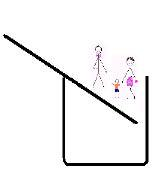

EN DEĞERLİ FİNANSAL VARLIĞINIZI NASIL GÜVENCE ALTINA ALIRSINIZ
Para benim ilk, tek ve son aşkımdır.
Armand Hammer
Seminerlerimde insanlara sahip oldukları en değerli finansal varlığın ne olduğunu soruyorum. Bu soruya çok ilginç cevaplar verenler var, kimisi zaman, kimisi sağlık, kimisi sahip olduğu ev diyor. Ama bu cevaplardan hiçbiri de benim duymak istediğim cevap değil. Doğru cevap para kazanabilme becerisidir. Evet, sahip olduğunuz para kazanabilme becerisi, en değerli finansal kaynağınızdır. Bu becerinizi güvence altına aldığınızda, en değerli finansal varlığınızı güvence altına almış olursunuz.
Bir önceki yazımda kullandığım şekil ile devam edeceğim. Hayat sigortalarından bahsederken, hayat sigortasının sahibi olan kişi yaşamını kaybederse ailesi yoksulluk çukuruna düşebilir, ama bir teminatı varsa ailesini koruyabilir, demiştik. Diyelim ki ailenin geçimini sağlayan kişi bir kaza geçirdi ama yaşamını kaybetmedi, sakat kaldı ya da tedavi görüyor ama bu süre içinde para kazanabilme becerisini kaybetti. Ne olur?
Ne olacağı şekilde gösteriliyor. Ailenin geçimini temin eden örneğimizdeki baba da anne ve çocuğun yanına gelir ve denge bozulur. Baba yaşamını kaybetseydi finansal açıdan daha iyiydi, çünkü baba da ailesine katıldığında sadece anne ve çocuğun düşeceğinden daha hızlı bir şekilde aile yoksulluk çukuruna düşecektir. Bu durumda kaldıracı dengelemek için daha fazla teminata ihtiyacımız vardır. İşte bu sebepledir ki, kaza sigortası bütün diğer sigortaların hepsinden daha önemlidir. Hayat sigortası, otomobilinizin KASKO’su, işyeri sigortanız, emlak sigortanız hangisi gelirse aklınıza hepsinden daha önemlidir. Çünkü sadece kaza sigortası sahip olduğunuz en değerli varlığı güvence altına alır.

Altın yumurtlayan tavuğun hikayesini hepiniz duymuşsunuzdur. Hepimizin hayatında altın yumurtlayan bir tavuk var. Bu, sizsiniz! Bugüne kadar sahip olduğunuz evinizi, arabanızı, değerli eşyalarınızı, işlerinizi hep kendiniz çalışarak elde ediyorsunuz. Danışmanlık verdiğim kişi ve kurumlarda bununla sık sık karşılaşıyorum. Bazı insanlarda sigorta bilinci oldukça ileri seviyede. Ancak kendilerini nedense istisna tutabiliyorlar. Bakıyorsunuz evinin, arabasının, işyerinin sigortası var ama kendisinin yok. Aileler bayram öncesi alışverişlerinde çocuklarına her şeyin en iyisini almak için zaman zaman kendilerine bir şey almayabilirler ya da kendi ihtiyaçlarından feragat edebilirler. Ama sigortada durum farklıdır. Teşbihte hata olmazmış, kendinizi şöyle hayal etmenizi istiyorum, sizin altın yumurtlayan bir tavuğunuz var. Hergün bir altın yumurta yumurtluyor, siz de bununla ihtiyaçlarınızı karşılıyor, kalanıyla da geleceğinize yatırım yapıyorsunuz. İşinizi garantiye almak için de yumurtaları sigortalıyorsunuz, ola ki yumurtalardan herhangi biri çalınırsa sigorta şirketinizin yerine yenisini koymasını umuyorsunuz. Sizce de burada bir mantık hatası yok mu? Altın yumurtaların kaynağı tavuk, ama siz tavuğu koruyacağınıza yumurtaları korumaya çalışıyorsunuz. İşte kaza sigortasına sahip olmayıp da diğer sigortalara sahip olmayı ben buna benzetiyorum.
Size iyi bir haber daha vereyim, kaza sigortası sahip olabileceğiniz en ekonomik sigortalardan biridir. Bugün 20.000 TL değerinde bir otomobilin kaza sigortasının yıllık değeri 1.000 TL iken kendinize aynı teminatlarla bir kaza sigortası yaptırmanız durumunda ödeyeceğiniz yıllık prim sadece 200 TL olacaktır. Günlük 1 TL bile maliyeti olmayan bir poliçe ile kendiniz için en gerekli olan teminata sahip olabilmeniz mümkündür. Bir de olayın dini boyutu var. Kaza sigortasının dinen uygun olup olmadığını da sorgulayabilirsiniz. Herksin inancına da saygı duymamız gerektiğini düşünüyorum. Bu konuda da Diyanet Bakanlığı’na bağlı Din İşleri Yüksek Kurulu’na sizin için danıştım. Onların da bu konudaki fetvası dinen uygun olduğu yönündedir.
Kaza Sigortası Alırken Dikkat Edilmesi Gerekenler